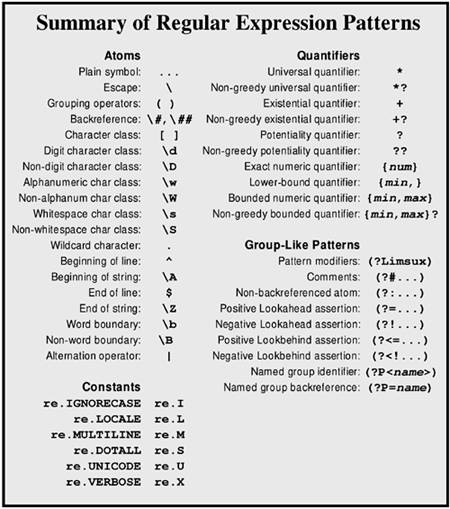

| [ Team LiB ] |
|
3.3 Standard Modules3.3.1 Versions and Optimizations
Python has undergone several changes in its regular expression support. regex was superceded by pre in Python 1.5; pre, in turn, by sre in Python 2.0. Although Python has continued to include the older modules in its standard library for backwards compatibility, the older ones are deprecated when the newer versions are included. From Python 1.5 forward, the module re has served as a wrapper to the underlying regular expression engine (sre or pre). But even though Python 2.0+ has used re to wrap sre, pre is still available (the latter along with its own underlying pcre C extension module that can technically be used directly). Each version has generally improved upon its predecessor, but with something as complicated as regular expressions there are always a few losses with each gain. For example, sre adds Unicode support and is faster for most operations—but pre has better optimization of case-insensitive searches. Subtle details of regular expression patterns might even let the quite-old regex module perform faster than the newer ones. Moreover, optimizing regular expressions can be extremely complicated and dependent upon specific small version differences. Readers might start to feel their heads swim with these version details. Don't panic. Other than out of historic interest, you really do not need to worry about what implementations underlie regular expression support. The simple rule is just to use the module re and not think about what it wraps—the interface is compatible between versions. The real virtue of regular expressions is that they allow a concise and precise (albeit somewhat cryptic) description of complex patterns in text. Most of the time, regular expression operations are fast enough; there is rarely any point in optimizing an application past the point where it does what it needs to do fast enough that speed is not a problem. As Knuth famously remarks, "We should forget about small efficiencies, say about 97% of the time: Premature optimization is the root of all evil." ("Computer Programming as an Art" in Literate Programming, CSLI Lecture Notes Number 27, Stanford University Center for the Study of Languages and Information, 1992). In case regular expression operations prove to be a genuinely problematic performance bottleneck in an application, there are four steps you should take in speeding things up. Try these in order:
3.3.2 Simple Pattern Matching
The real purpose of the fnmatch module is to match filenames against a pattern. Most typically, fnmatch is used indirectly through the glob module, where the latter returns lists of matching files (for example to process each matching file). But fnmatch does not itself know anything about filesystems, it simply provides a way of checking patterns against strings. The pattern language used by fnmatch is much simpler than that used by re, which can be either good or bad, depending on your needs. As a plus, most everyone who has used a DOS, Windows, OS/2, or Unix command line is already familiar with the fnmatch pattern language, which is simply shell-style expansions. Four subpatterns are available in fnmatch patterns. In contrast to re patterns, there is no grouping and no quantifiers. Obviously, the discernment of matches is much less with fnmatch than with re. The subpatterns are as follows: Glob-style subpatterns
* Match everything that follows (non-greedy).
? Match any single character.
[set] Match one character from a set. A set generally
follows the same rules as a regular expression
character class. It may include zero or more ranges
and zero or more enumerated characters.
[!set] Match any one character that is not in the set.
A pattern is simply the concatenation of one or more subpatterns. FUNCTIONSfnmatch.fnmatch(s, pat)Test whether the pattern pat matches the string s. On case-insensitive filesystems, the match is case-insensitive. A cross-platform script should avoid fnmatch.fnmatch() except when used to match actual filenames.
>>> from fnmatch import fnmatch
>>> fnmatch('this', '[T]?i*') # On Unix-like system
0
>>> fnmatch('this', '[T]?i*') # On Win-like system
1
SEE ALSO: fnmatch.fnmatchcase() 233; fnmatch.fnmatchcase(s, pat)Test whether the pattern pat matches the string s. The match is case-sensitive regardless of platform.
>>> from fnmatch import fnmatchcase
>>> fnmatchcase('this', '[T]?i*')
0
>>> from string import upper
>>> fnmatchcase(upper('this'), upper('[T]?i*'))
1
SEE ALSO: fnmatch.fnmatch() 233; fnmatch.filter(lst, pat)Return a new list containing those elements of lst that match pat. The matching behaves like fnmatch.fnmatch() rather than like fnmatch.fnmatchcase(), so the results can be OS-dependent. The example below shows a (slower) means of performing a case-sensitive match on all platforms. >>> import fnmatch # Assuming Unix-like system >>> fnmatch.filter(['This','that','other','thing'], '[Tt]?i*') ['This', 'thing'] >>> fnmatch.filter(['This','that','other','thing'], '[a-z]*') ['that', 'other', 'thing'] >>> from fnmatch import fnmatchcase # For all platforms >>> mymatch = lambda s: fnmatchcase(s, '[a-z]*') >>> filter(mymatch, ['This','that','other','thing']) ['that', 'other', 'thing'] For an explanation of the built-in function filter () function, see Appendix A. SEE ALSO: fnmatch.fnmatch() 233; fnmatch.fnmatchcase() 233; SEE ALSO: glob 64; re 236; 3.3.3 Regular Expression Modules
The Python-written module pre, and the C-written pcre module that implements the actual regular expression engine, are the regular expression modules for Python 1.5—1.6. For complete backwards compatibility, they continue to be included in Python 2.0+. Importing the symbol space of pre is intended to be equivalent to importing re (i.e., sre at one level of indirection) in Python 2.0+, with the exception of the handling of Unicode strings, which pre cannot do. That is, the lines below are almost equivalent, other than potential performance differences in specific operations: >>> import pre as re >>> import re However, there is very rarely any reason to use pre in Python 2.0+. Anyone deciding to import pre should know far more about the internals of regular expression engines than is contained in this book. Of course, prior to Python 2.0, importing re simply imports pcre itself (and the Python wrappers later renamed pre). SEE ALSO: re 236;
This module exists solely for conversion of old regular expressions from scripts written for pre-1.5 versions of Python, or possibly from regular expression patterns used with tools such as sed, awk, or grep. Conversions are not guaranteed to be entirely correct, but reconvert provides a starting point for a code update. FUNCTIONSreconvert.convert(s)Return as a string the modern re-style pattern that corresponds to the regex-style pattern passed in argument s. For example: >>> import reconvert >>> reconvert.convert(r'\<\(cat\|dog\)\>') '\\b(cat|dog)\\b' >>> import re >>> re.findall(r'\b(cat | dog)\b', "The dog chased a bobcat") ['dog'] SEE ALSO: regex 235;
The regex module is distributed with recent Python versions only to ensure strict backwards compatibility of scripts. Starting with Python 2.1, importing regex will produce a DeprecationWarning: % python -c "import regex" -c:1: DeprecationWarning: the regex module is deprecated; please use the re module For all users of Python 1.5+, regex should not be used in new code, and efforts should be made to convert its usage to re calls. SEE ALSO: reconvert 235;
Support for regular expressions in Python 2.0+ is provided by the module sre. The module re simply wraps sre in order to have a backwards- and forwards-compatible name. There will almost never be any reason to import sre itself; some later version of Python might eventually deprecate sre also. As with pre, anyone deciding to import sre itself should know far more about the internals of regular expression engines than is contained in this book. SEE ALSO: re 236;
PATTERN SUMMARYFigure 3.1 lists regular expression patterns; following that are explanations of each pattern. For more detailed explanation of patterns in action, consult the tutorial and/or problems contained in this chapter. The utility function re_show() defined in the tutorial is used in some descriptions. Figure 3.1. Regular expression patterns ATOMIC OPERATORSPlain symbolAny character not described below as having a special meaning simply represents itself in the target string. An "A" matches exactly one "A" in the target, for example. Escape: "\"The escape character starts a special sequence. The special characters listed in this pattern summary must be escaped to be treated as literal character values (including the escape character itself). The letters "A", "b", "B", "d", "D", "s", "S", "w", "W", and "Z" specify special patterns if preceded by an escape. The escape character may also introduce a backreference group with up to two decimal digits. The escape is ignored if it precedes a character with no special escaped meaning. Since Python string escapes overlap regular expression escapes, it is usually better to use raw strings for regular expressions that potentially include escapes. For example:
>>> from re_show import re_show
>>> re_show(r'\$ \\ \^', r'\$ \\ \^ $ \ ^')
\$ \\ \^ {$ \ ^}
>>> re_show(r'\d \w', '7 a 6 # ! C')
{7 a} 6 # ! C
Grouping operators: "(", ")"Parentheses surrounding any pattern turn that pattern into a group (possibly within a larger pattern). Quantifiers refer to the immediately preceding group, if one is defined, otherwise to the preceding character or character class. For example:
>>> from re_show import re_show
>>> re_show(r'abc+', 'abcabc abc abccc')
{abc}{abc} {abc} {abccc}
>>> re_show(r'(abc)+', 'abcabc abc abccc')
{abcabc} {abc} {abc}cc
Backreference: "\d", "\dd"A backreference consists of the escape character followed by one or two decimal digits. The first digit in a back reference may not be a zero. A backreference refers to the same string matched by an earlier group, where the enumeration of previous groups starts with 1. For example:
>>> from re_show import re_show
>>> re_show(r'([abc])(.*)\1', 'all the boys are coy')
{all the boys a}re coy
An attempt to reference an undefined group will raise an error. Character classes: "[", "]"Specify a set of characters that may occur at a position. The list of allowable characters may be enumerated with no delimiter. Predefined character classes, such as "\d", are allowed within custom character classes. A range of characters may be indicated with a dash. Multiple ranges are allowed within a class. If a dash is meant to be included in the character class itself, it should occur as the first listed character. A character class may be complemented by beginning it with a caret ("^"). If a caret is meant to be included in the character class itself, it should occur in a noninitial position. Most special characters, such as "$", ".", and "(", lose their special meaning inside a character class and are merely treated as class members. The characters "]", "\", and "-" should be escaped with a backslash, however. For example:
>>> from re_show import re_show
>>> re_show(r'[a-fA-F]', 'A X c G')
{A} X {c} G
>>> re_show(r'[-A$BC\]]', r'A X - \ ] [ $')
{A} X {-} \ {]} [ {$}
>>> re_show(r'[^A-Fa-f]', r'A X c G')
A{ }{X}c{}{G}
Digit character class: "\d"The set of decimal digits. Same as "0-9". Non-digit character class: "\D"The set of all characters except decimal digits. Same as "^0-9". Alphanumeric character class: "\w"The set of alphanumeric characters. If re.LOCALE and re.UNICODE modifiers are not set, this is the same as [a-zA-ZO-9_]. Otherwise, the set includes any other alphanumeric characters appropriate to the locale or with an indicated Unicode character property of alphanumeric. Non-alphanumeric character class: "\W"The set of nonalphanumeric characters. If re.LOCALE and re.UNICODE modifiers are not set, this is the same as [^a-zA-ZO-9_]. Otherwise, the set includes any other characters not indicated by the locale or Unicode character properties as alphanumeric. Whitespace character class: "\s"The set of whitespace characters. Same as [ \t\n\r\f\v]. Non-whitespace character class: "\S"The set of nonwhitespace characters. Same as [^ \t\n\r\f\v]. Wildcard character: "."The period matches any single character at a position. If the re.DOTALL modifier is specified, "." will match a newline. Otherwise, it will match anything other than a newline. Beginning of line: "^"The caret will match the beginning of the target string. If the re.MULTILINE modifier is specified, "^" will match the beginning of each line within the target string. Beginning of string: "\A"The "\A" will match the beginning of the target string. If the re.MULTILINE modifier is not specified, "\A" behaves the same as "^". But even if the modifier is used, "\A" will match only the beginning of the entire target. End of line: "$"The dollar sign will match the end of the target string. If the re.MULTILINE modifier is specified, "$" will match the end of each line within the target string. End of string: "\Z"The "\Z" will match the end of the target string. If the re.MULTILINE modifier is not specified, "\Z" behaves the same as "$". But even if the modifier is used, "\Z" will match only the end of the entire target. Word boundary: "\b"The "\b" will match the beginning or end of a word (where a word is defined as a sequence of alphanumeric characters according to the current modifiers). Like "^" and "$", "\b" is a zero-width match. Non-word boundary: "\B"The "\B" will match any position that is not the beginning or end of a word (where a word is defined as a sequence of alphanumeric characters according to the current modifiers). Like "^" and "$", "\B" is a zero-width match. Alternation operator: " |"The pipe symbol indicates a choice of multiple atoms in a position. Any of the atoms (including groups) separated by a pipe will match. For example:
>>> from re_show import re_show
>>> re_show(r'A|c|G', r'A X c G')
{A} X {c} {G}
>>> re_show(r'(abc)|(xyz)', 'abc efg xyz lmn')
{abc} efg {xyz} lmn
QUANTIFIERSUniversal quantifier: "*"Match zero or more occurrences of the preceding atom. The "*" quantifier is happy to match an empty string. For example:
>>> from re_show import re_show
>>> re_show('a* ', ' a aa aaa aaaa b')
{ }{a }{aa }{aaa}{aaaa }b
Non-greedy universal quantifier: "*?"Match zero or more occurrences of the preceding atom, but try to match as few occurrences as allowable. For example:
>>> from re_show import re_show
>>> re_show('<.*>', '<> <tag>Text</tag>')
{<> <tag>Text</tag>}
>>> re_show('<.*?>', '<> <tag>Text</tag>')
{<>} {<tag>}Text{</tag>}
Existential quantifier: "+"Match one or more occurrences of the preceding atom. A pattern must actually occur in the target string to satisfy the "+" quantifier. For example:
>>> from re_show import re_show
>>> re_show('a+ ', ' a aa aaa aaaa b')
{a }{aa }{aaa }{aaaa }b
Non-greedy existential quantifier: "+?"Match one or more occurrences of the preceding atom, but try to match as few occurrences as allowable. For example:
>>> from re_show import re_show
>>> re_show('<.+>', '<> <tag>Text</tag>')
{<> <tag>Text</tag>}
>>> re_show('<.+?>', '<> <tag>Text</tag>')
{<> <tag>}Text{</tag>}
Potentiality quantifier: "?"Match zero or one occurrence of the preceding atom. The "?" quantifier is happy to match an empty string. For example:
>>> from re_show import re_show
>>> re_show('a? ', ' a aa aaa aaaa b')
{ }{a }a{a }aa{a }aaa{a }b
Non-greedy potentiality quantifier: "??"Match zero or one occurrence of the preceding atom, but match zero if possible. For example:
>>> from re_show import re_show
>>> re_show(' a?', ' a aa aaa aaaa b')
{ a}{ a}a{ a}aa{ a}aaa{ }b
>>> re_show(' a??', ' a aa aaa aaaa b')
{ }a{ }aa{ }aaa{ }aaaa{ }b
Exact numeric quantifier: "{num}"Match exactly num occurrences of the preceding atom. For example:
>>> from re_show import re_show
>>> re_show('a{3} ', ' a aa aaa aaaa b')
a aa {aaa }a{aaa }b
Lower-bound quantifier: "{min,}"Match at least min occurrences of the preceding atom. For example:
>>> from re_show import re_show
>>> re_show('a{3,} ', ' a aa aaa aaaa b')
a aa {aaa }{aaaa }b
Bounded numeric quantifier: "{min,max}"Match at least min and no more than max occurrences of the preceding atom. For example:
>>> from re_show import re_show
>>> re_show('a{2,3} ', ' a aa aaa aaaa b')
a {aa }{aaa }a{aaa }
Non-greedy bounded quantifier: "{min,max}?"Match at least min and no more than max occurrences of the preceding atom, but try to match as few occurrences as allowable. Scanning is from the left, so a nonminimal match may be produced in terms of right-side groupings. For example:
>>> from re_show import re_show
>>> re_show(' a{2,4}?', ' a aa aaa aaaa b')
a{ aa}{ aa}a{ aa}aa b
>>> re_show('a{2,4}? ', ' a aa aaa aaaa b')
a {aa }{aaa }{aaaa }b
GROUP-LIKE PATTERNSPython regular expressions may contain a number of pseudo-group elements that condition matches in some manner. With the exception of named groups, pseudo-groups are not counted in backreferencing. All pseudo-group patterns have the form "(?...)". Pattern modifiers: "(?Limsux)"The pattern modifiers should occur at the very beginning of a regular expression pattern. One or more letters in the set "Limsux" may be included. If pattern modifiers are given, the interpretation of the pattern is changed globally. See the discussion of modifier constants below or the tutorial for details. Comments: "(?#...)"Create a comment inside a pattern. The comment is not enumerated in backreferences and has no effect on what is matched. In most cases, use of the "(?x)" modifier allows for more clearly formatted comments than does "(?#...)".
>>> from re_show import re_show
>>> re_show(r'The(?#words in caps) Cat', 'The Cat in the Hat')
{The Cat} in the Hat
Non-backreferenced atom: "(?:...)"Match the pattern "...", but do not include the matched string as a backreferencable group. Moreover, methods like re.match.group () will not see the pattern inside a non-backreferenced atom.
>>> from re_show import re_show
>>> re_show(r'(?:\w+) (\w+).* \1', 'abc xyz xyz abc')
{abc xyz xyz} abc
>>> re_show(r'(\w+) (\w+).* \1', 'abc xyz xyz abc')
{abc xyz xyz abc}
Positive Lookahead assertion: "(?=...)"Match the entire pattern only if the subpattern "..." occurs next. But do not include the target substring matched by "..." as part of the match (however, some other subpattern may claim the same characters, or some of them).
>>> from re_show import re_show
>>> re_show(r'\w+ (?=xyz)', 'abc xyz xyz abc')
{abc }{xyz }xyz abc
Negative Lookahead assertion: "(?!...)"Match the entire pattern only if the subpattern "..." does not occur next.
>>> from re_show import re_show
>>> re_show(r'\w+ (?!xyz)', 'abc xyz xyz abc')
abc xyz {xyz }abc
Positive Lookbehind assertion: "(?< =...)"Match the rest of the entire pattern only if the subpattern "..." occurs immediately prior to the current match point. But do not include the target substring matched by "..." as part of the match (the same characters may or may not be claimed by some prior group(s) in the entire pattern). The pattern "..." must match a fixed number of characters and therefore not contain general quantifiers.
>>> from re_show import re_show
>>> re_show(r'\w+(?<=[A-Z]) ', 'Words THAT end in capS X')
Words {THAT }end in {capS }X
Negative Lookbehind assertion: "(?<!...)"Match the rest of the entire pattern only if the subpattern "..." does not occur immediately prior to the current match point. The same characters may or may not be claimed by some prior group(s) in the entire pattern. The pattern "..." must match a fixed number of characters and therefore not contain general quantifiers.
>>> from re_show import re_show
>>> re_show(r'\w+(?<![A-Z]) ', 'Words THAT end in capS X')
{Words }THAT {end }{in }capS X
Named group identifier: "(?P<name>)"Create a group that can be referred to by the name name as well as in enumerated backreferences. The forms below are equivalent.
>>> from re_show import re_show
>>> re_show(r'(\w+) (\w+).* \1', 'abc xyz xyz abc')
{abc xyz xyz abc}
>>> re_show(r'(?P<first>\w+) (\w+).* (?P=first)', 'abc xyz xyz abc')
{abc xyz xyz abc}
>>> re_show(r'(?P<first>\w+) (\w+).* \1', 'abc xyz xyz abc')
{abc xyz xyz abc}
Named group backreference: "(?P=name)"Backreference a group by the name name rather than by escaped group number. The group name must have been defined earlier by (?P<name>), or an error is raised. CONSTANTSA number of constants are defined in the re modules that act as modifiers to many re functions. These constants are independent bit-values, so that multiple modifiers may be selected by bitwise disjunction of modifiers. For example:
>>> import re
>>> c = re.compile('cat | dog', re.IGNORECASE | re.UNICODE)
re.l, re.IGNORECASEModifier for case-insensitive matching. Lowercase and uppercase letters are interchangeable in patterns modified with this modifier. The prefix (?i) may also be used inside the pattern to achieve the same effect. re.L, re.LOCALEModifier for locale-specific matching of \w, \W, \b, and \B. The prefix (?L) may also be used inside the pattern to achieve the same effect. re.M, re.MULTILINEModifier to make ^ and $ match the beginning and end, respectively, of each line in the target string rather than the beginning and end of the entire target string. The prefix (?m) may also be used inside the pattern to achieve the same effect. re.S, re.DOTALLModifier to allow . to match a newline character. Otherwise, . matches every character except newline characters. The prefix (?s) may also be used inside the pattern to achieve the same effect. re.U, re.UNICODEModifier for Unicode-property matching of \w, \W, \b, and \B. Only relevant for Unicode targets. The prefix (?u) may also be used inside the pattern to achieve the same effect. re.X, re.VERBOSEModifier to allow patterns to contain insignificant whitespace and end-of-line comments. Can significantly improve readability of patterns. The prefix (?x) may also be used inside the pattern to achieve the same effect. re.engineThe regular expression engine currently in use. Only supported in Python 2.0+, where it normally is set to the string sre. The presence and value of this constant can be checked to make sure which underlying implementation is running, but this check is rarely necessary. FUNCTIONSFor all re functions, where a regular expression pattern pattern is an argument, pattern may be either a compiled regular expression or a string. re.escape(s)Return a string with all nonalphanumeric characters escaped. This (slightly scattershot) conversion makes an arbitrary string suitable for use in a regular expression pattern (matching all literals in original string).
>>> import re
>>> print re.escape("(*@&^$@|")
\(\*\@\&\^\$\@\|
re.findall(pattern=..., string=...)Return a list of all nonoverlapping occurrences of pattern in string. If pattern consists of several groups, return a list of tuples where each tuple contains a match for each group. Length-zero matches are included in the returned list, if they occur.
>>> import re
>>> re.findall(r'\b[a-z]+\d+\b', 'abc123 xyz666 lmn-11 def77')
['abc123', 'xyz666', 'def77']
>>> re.findall(r'\b([a-z]+)(\d+)\b', 'abc123 xyz666 lmn-11 def77')
[('abc', '123'), ('xyz', '666'), ('def', '77')]
SEE ALSO: re.search() 249; mx.TextTools.findall() 312; re.purge()Clear the regular expression cache. The re module keeps a cache of implicitly compiled regular expression patterns. The number of patterns cached differs between Python versions, with more recent versions generally keeping 100 items in the cache. When the cache space becomes full, it is flushed automatically. You could use re.purge() to tune the timing of cache flushes. However, such tuning is approximate at best: Patterns that are used repeatedly are much better off explicitly compiled with re.compile() and then used explicitly as named objects. re.split(pattern=..., string=...[,maxsplit=0])Return a list of substrings of the second argument string. The first argument pattern is a regular expression that delimits the substrings. If pattern contains groups, the groups are included in the resultant list. Otherwise, those substrings that match pattern are dropped, and only the substrings between occurrences of pattern are returned. If the third argument maxsplit is specified as a positive integer, no more than maxsplit items are parsed into the list, with any leftover contained in the final list element. >>> import re >>> re.split(r'\s+', 'The Cat in the Hat') ['The', 'Cat', 'in', 'the', 'Hat'] >>> re.split(r'\s+', 'The Cat in the Hat', maxsplit=3) ['The', 'Cat', 'in', 'the Hat'] >>> re.split(r'(\s+)', 'The Cat in the Hat') ['The', ' ', 'Cat', ' ', 'in', ' ', 'the', ' ', 'Hat'] >>> re.split(r'(a)(t)', 'The Cat in the Hat') ['The C', 'a', 't', ' in the H', 'a', 't', ''] >>> re.split(r'a(t)', 'The Cat in the Hat') ['The C', 't', ' in the H', 't', ''] SEE ALSO: string.split() 142; re.sub(pattern=..., repl=..., string=...[,count=0])Return the string produced by replacing every nonoverlapping occurrence of the first argument pattern with the second argument repl in the third argument string. If the fourth argument count is specified, no more than count replacements will be made. The second argument repl is most often a regular expression pattern as a string. Backreferences to groups matched by pattern may be referred to by enumerated backreferences using the usual escaped numbers. If backreferences in pattern are named, they may also be referred to using the form \g<name> (where name is the name given the group in pat). As well, enumerated backreferences may optionally be referred to using the form \g<num>, where num is an integer between 1 and 99. Some examples:
>>> import re
>>> s = 'abc123 xyz666 lmn-11 def77'
>>> re.sub(r'\b([a-z]+)(\d+)', r'\2\1 :', s)
'123abc : 666xyz : lmn-11 77def :'
>>> re.sub(r'\b(?P<lets>[a-z]+)(?P<nums>\d+)', r'\g<nums>\g<1> :', s)
'123abc : 666xyz : lmn-11 77def :'
>>> re.sub('A', 'X', 'AAAAAAAAAA', count=4)
'XXXXAAAAAA'
A variant manner of calling re.sub () uses a function object as the second argument repl. Such a callback function should take a MatchObject as an argument and return a string. The repl function is invoked for each match of pattern, and the string it returns is substituted in the result for whatever pattern matched. For example:
>>> import re
>>> sub_cb = lambda pat: '('+'len(pat.group())'+')'+pat.group()
>>> re.sub(r'\w+', sub_cb, 'The length of each word')
'(3)The (6)length (2)of (4)each (4)word'
Of course, if repl is a function object, you can take advantage of side effects rather than (or instead of) simply returning modified strings. For example: >>> import re >>> def side_effects(match): ... # Arbitrarily complicated behavior could go here... ... print len(match.group()), match.group() ... return match.group() # unchanged match ... >>> new = re.sub(r'\w+', side_effects, 'The length of each word') 3 The 6 length 2 of 4 each 4 word >>> new 'The length of each word' Variants on callbacks with side effects could be turned into complete string-driven programs (in principle, a parser and execution environment for a whole programming language could be contained in the callback function, for example). SEE ALSO: string.replace() 139; re.subn(pattern=..., repl=..., string=...[,count=0])Identical to re.sub () , except return a 2-tuple with the new string and the number of replacements made.
>>> import re
>>> s = 'abc123 xyz666 lmn-11 def77'
>>> re.subn(r'\b([a-z]+)(\d+)', r'\2\1 :', s)
('123abc : 666xyz : lmn-11 77def :', 3)
SEE ALSO: re.sub() 246; CLASS FACTORIESAs with some other Python modules, primarily ones written in C, re does not contain true classes that can be specialized. Instead, re has several factory-functions that return instance objects. The practical difference is small for most users, who will simply use the methods and attributes of returned instances in the same manner as those produced by true classes. re.compile(pattern=...[,flags=...])Return a PatternObject based on pattern string pattern. If the second argument flags is specified, use the modifiers indicated by flags. A PatternObject is interchangeable with a pattern string as an argument to re functions. However, a pattern that will be used frequently within an application should be compiled in advance to assure that it will not need recompilation during execution. Moreover, a compiled PatternObject has a number of methods and attributes that achieve effects equivalent to re functions, but which are somewhat more readable in some contexts. For example:
>>> import re
>>> word = re.compile('[A-Za-z]+')
>>> word.findall('The Cat in the Hat')
['The', 'Cat', 'in', 'the', 'Hat']
>>> re.findall(word, 'The Cat in the Hat')
['The', 'Cat', 'in', 'the', 'Hat']
re.match(pattern=..., string=...[,flags=...])Return a MatchObject if an initial substring of the second argument string matches the pattern in the first argument pattern. Otherwise return None. A MatchObject, if returned, has a variety of methods and attributes to manipulate the matched pattern—but notably a MatchObject is not itself a string. Since re.match() only matches initial substrings, re.search() is more general. re.search() can be constrained to itself match only initial substrings by prepending "\A" to the pattern matched. SEE ALSO: re.search() 249; re.compile.match() 250; re.search(pattern=..., string=...[,flags=...])Return a MatchObject corresponding to the leftmost substring of the second argument string that matches the pattern in the first argument pattern. If no match is possible, return None. A matched string can be of zero length if the pattern allows that (usually not what is actually desired). A MatchObject, if returned, has a variety of methods and attributes to manipulate the matched pattern—but notably a MatchObject is not itself a string. SEE ALSO: re.match() 248; re.compile.search() 250; METHODS AND ATTRIBUTESre.compile.findall(s)Return a list of nonoverlapping occurrences of the PatternObject in s. Same as re.findall() called with the PatternObject. SEE ALSO re.findall() re.compile.flagsThe numeric sum of the flags passed to re.compile() in creating the PatternObject. No formal guarantee is given by Python as to the values assigned to modifier flags, however. For example:
>>> import re
>>> re.I,re.L,re.M,re.S,re.X
(2, 4, 8, 16, 64)
>>> c = re.compile('a', re.I | re.M)
>>> c.flags
10
re.compile.groupindexA dictionary mapping group names to group numbers. If no named groups are used in the pattern, the dictionary is empty. For example:
>>> import re
>>> c = re.compile(r'(\d+)(\[A-Z]+)([a-z]+)')
>>> c.groupindex
{}
>>> c=re.compile(r'(?P<nums>\d+)(?P<caps>\[A-Z]+)(?P<lwrs>[a-z]+)')
>>> c.groupindex
{'nums': 1, 'caps': 2, 'lwrs': 3}
re.compile.match(s [,start [,end]])Return a MatchObject if an initial substring of the first argument s matches the PatternObject. Otherwise, return None. A MatchObject, if returned, has a variety of methods and attributes to manipulate the matched pattern—but notably a MatchObject is not itself a string. In contrast to the similar function re.match() , this method accepts optional second and third arguments start and end that limit the match to substring within s. In most respects specifying start and end is similar to taking a slice of s as the first argument. But when start and end are used, "^" will only match the true start of s. For example:
>>> import re
>>> s = 'abcdefg'
>>> c = re.compile('^b')
>>> print c.match(s, 1)
None
>>> c.match(s[1:])
<SRE_Match object at 0x10c440>
>>> c = re.compile('.*f$')
>>> c.match(s[:-1])
<SRE_Match object at 0x116d80>
>>> c.match(s,1,6)
<SRE_Match object at 0x10c440>
SEE ALSO: re.match() 248; re.compile.search() 250; re.compile.patternThe pattern string underlying the compiled MatchObject.
>>> import re
>>> c = re.compile('^abc$')
>>> c.pattern
'^abc$'
re.compile.search(s [,start [,end]])Return a MatchObject corresponding to the leftmost substring of the first argument string that matches the PatternObject. If no match is possible, return None. A matched string can be of zero length if the pattern allows that (usually not what is actually desired). A MatchObject, if returned, has a variety of methods and attributes to manipulate the matched pattern—but notably a MatchObject is not itself a string. In contrast to the similar function re.search() , this method accepts optional second and third arguments start and end that limit the match to a substring within s. In most respects specifying start and end is similar to taking a slice of s as the first argument. But when start and end are used, "^" will only match the true start of s. For example:
>>> import re
>>> s = 'abcdefg'
>>> c = re.compile('^b')
>>> c = re.compile('^b')
>>> print c.search(s, 1),c.search(s[1:])
None <SRE_Match object at 0x117980>
>>> c = re.compile('.*f$')
>>> print c.search(s[:-1]),c.search(s,1,6)
<SRE_Match object at Ox51040> <SRE_Match object at 0x51040>
SEE ALSO: re.search() 249; re.compile.match() 250; re.compile.split(s [,maxsplit])Return a list of substrings of the first argument s. If thePatternObject contains groups, the groups are included in the resultant list. Otherwise, those substrings that match PatternObject are dropped, and only the substrings between occurrences of pattern are returned. If the second argument maxsplit is specified as a positive integer, no more than maxsplit items are parsed into the list, with any leftover contained in the final list element. re.compile.split() is identical in behavior to re.split() , simply spelled slightly differently. See the documentation of the latter for examples of usage. SEE ALSO: re.split() 246; re.compile.sub(repl, s [,count=0])Return the string produced by replacing every nonoverlapping occurrence of the PatternObject with the first argument repl in the second argument string. If the third argument count is specified, no more than count replacements will be made. The first argument repl may be either a regular expression pattern as a string or a callback function. Backreferences may be named or enumerated. re.compile.sub () is identical in behavior to re.sub(), simply spelled slightly differently. See the documentation of the latter for a number of examples of usage. SEE ALSO: re.sub() 246; re.compile.subn() 252; re.compile.subn()Identical to re.compile.sub() , except return a 2-tuple with the new string and the number of replacements made. re.compile.subn() is identical in behavior to re.subn(), simply spelled slightly differently. See the documentation of the latter for examples of usage. SEE ALSO: re.subn() 248; re.compile.sub() 251; Note: The arguments to each "MatchObject" method are listed on the re.match() line, with ellipses given on the re.search() line. All arguments are identical since re.match() and re.search() return the very same type of object. re.match.end([group])
|
| [ Team LiB ] |
|